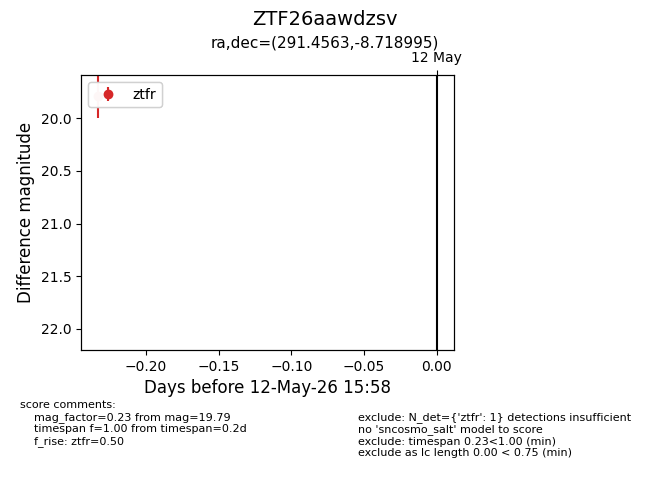
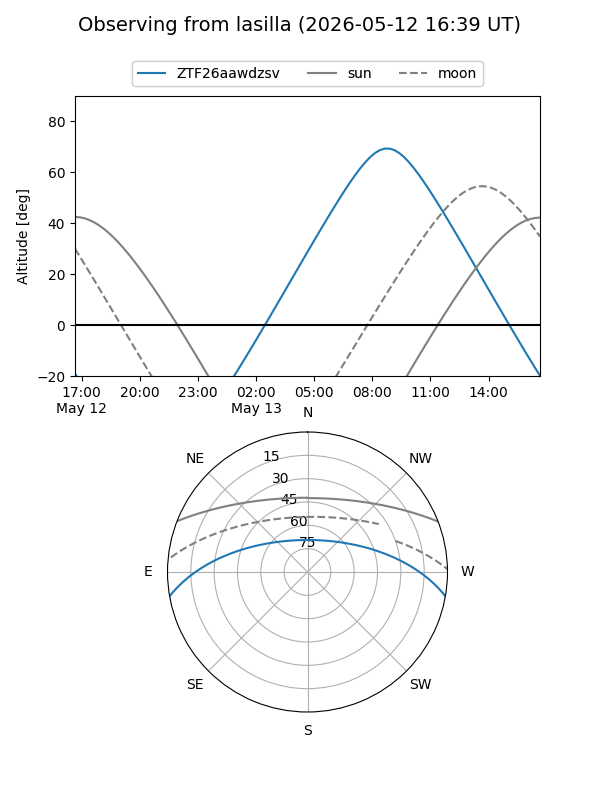
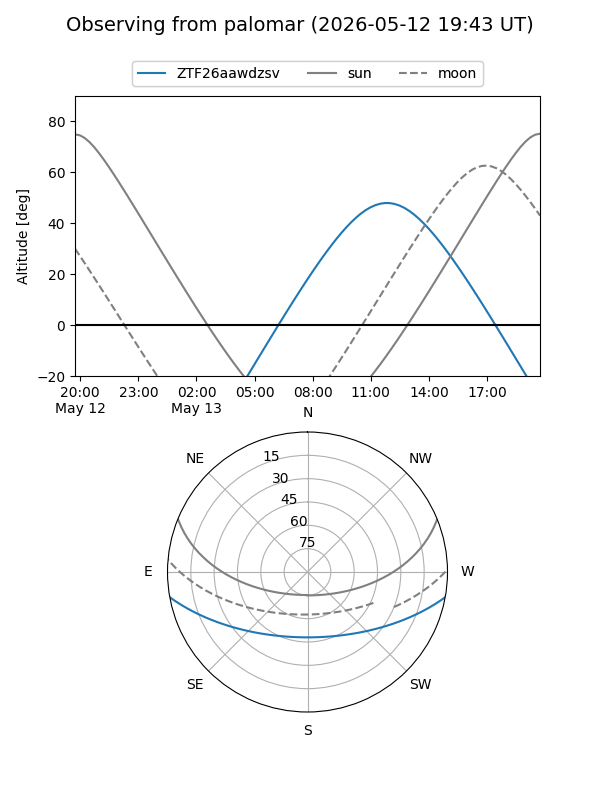

ZTF26aawdzsv
Target ZTF26aawdzsv at 2026-05-12 16:00
Aliases and brokers:
FINK: link
Lasair: link
ALeRCE: link
alt names
ZTF26aawdzsv (ztf,fink_ztf)
Coordinates:
equatorial (ra, dec) = 291.4563,-8.71900
equatorial (HMS+DMS) = 19:25:49.51,-08:43:08.38
galactic (l, b) = (28.9788,-11.57323)
Flags:
Photometry:
last ztfr=19.79
1 ztfr detections
Lightcurve

Visibility


Additional plots